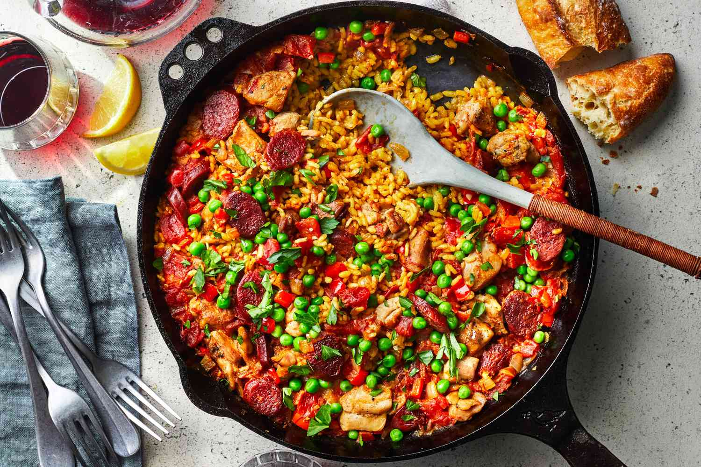

Paella
This is a twist to the traditional Paella but is still filling and, more importantly, easy to cook!

This chicken paella recipe is loaded with a medley of veggies and bold Spanish flavor. Endlessly impressive yet secretly easy, this is the one-pan chicken dinner you will surely be adding to your rotation!
The preparation time is less than 10 minutes and the cooking time is 40 minutes.
Ingredients
- 1 tbsp olive oil.
- 2 chicken breasts fillets, cut into strips.
- 1 onions, diced.
- 1 yellow and 1 red bell pepper, diced.
- 1 fat garlic clove, crushed.
- 140g cooking chorizo, sliced.
- 1 tsp turmeric.
- pinch of saffron.
- 1 tsp paprika.
- 300g paella rice.
- 850ml hot chicken or vegetable stock.
- 1 lemon, cut into wedges, to serve.
- small bunch of parsley, finely chopped, to serve.
Once the ingredients have been prepared you are ready to move on to the cooking.
Method
- Heat the olive oil in a deep frying pan over a high heat. Brown the chicken all over – don’t cook completely. Once browned, transfer to a plate.
- Reduce the heat to low, add the onions and cook slowly until softened, about 10 mins. Add the garlic, stir for 1 min, then toss in the chorizo and fry until it releases its oils.
- Stir in the spices, then tip in the rice. Stir to coat the rice in the oils and spices for about 2 mins, then pour in the stock. Bring to the boil, return the chicken to the pan and simmer for about 20 mins, stirring occasionally.
- Add the peas to the pan and simmer for a further 5 mins until the rice is cooked and the chicken is tender. Season well and serve with the lemon and parsley.